01. GUARDIAN
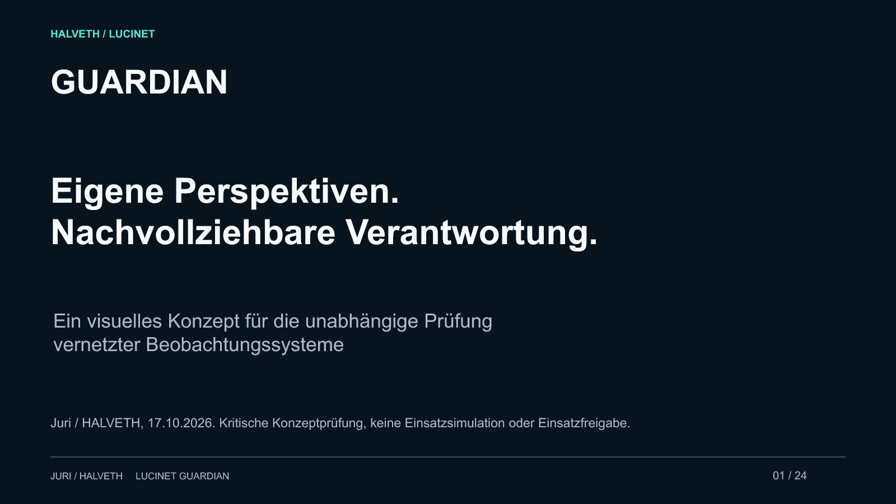
Folientext lesen
HALVETH / LUCINET
GUARDIAN
JURI / HALVETH LUCINET GUARDIAN
01 / 24
Eigene Perspektiven.
Nachvollziehbare Verantwortung.
Ein visuelles Konzept für die unabhängige Prüfung
vernetzter Beobachtungssysteme
Juri / HALVETH, 17.10.2026. Kritische Konzeptprüfung, keine Einsatzsimulation oder Einsatzfreigabe.
02. Die Vorstellung hinter GUARDIAN
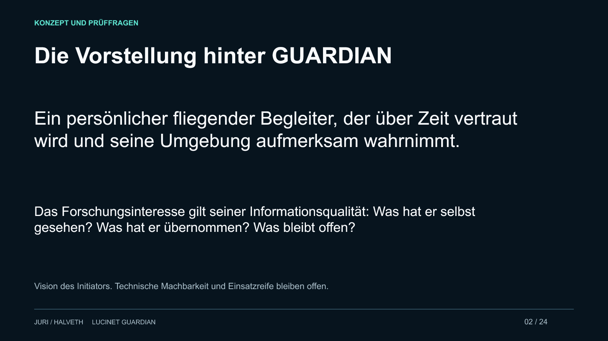
Folientext lesen
KONZEPT UND PRÜFFRAGEN
Die Vorstellung hinter GUARDIAN
JURI / HALVETH LUCINET GUARDIAN
02 / 24
Ein persönlicher fliegender Begleiter, der über Zeit vertraut wird und seine Umgebung aufmerksam wahrnimmt.
Das Forschungsinteresse gilt seiner Informationsqualität: Was hat er selbst gesehen? Was hat er übernommen? Was bleibt offen?
Vision des Initiators. Technische Machbarkeit und Einsatzreife bleiben offen.
03. Vision, Modell und vorhandener Code
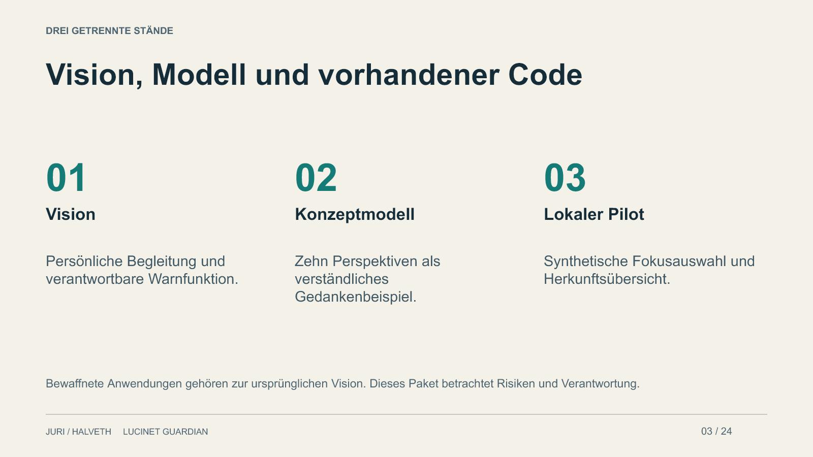
Folientext lesen
DREI GETRENNTE STÄNDE
Vision, Modell und vorhandener Code
JURI / HALVETH LUCINET GUARDIAN
03 / 24
01
Vision
Persönliche Begleitung und verantwortbare Warnfunktion.
02
Konzeptmodell
Zehn Perspektiven als verständliches Gedankenbeispiel.
03
Lokaler Pilot
Synthetische Fokusauswahl und Herkunftsübersicht.
Bewaffnete Anwendungen gehören zur ursprünglichen Vision. Dieses Paket betrachtet Risiken und Verantwortung.
04. Zehn Einheiten, zehn Informationsstände
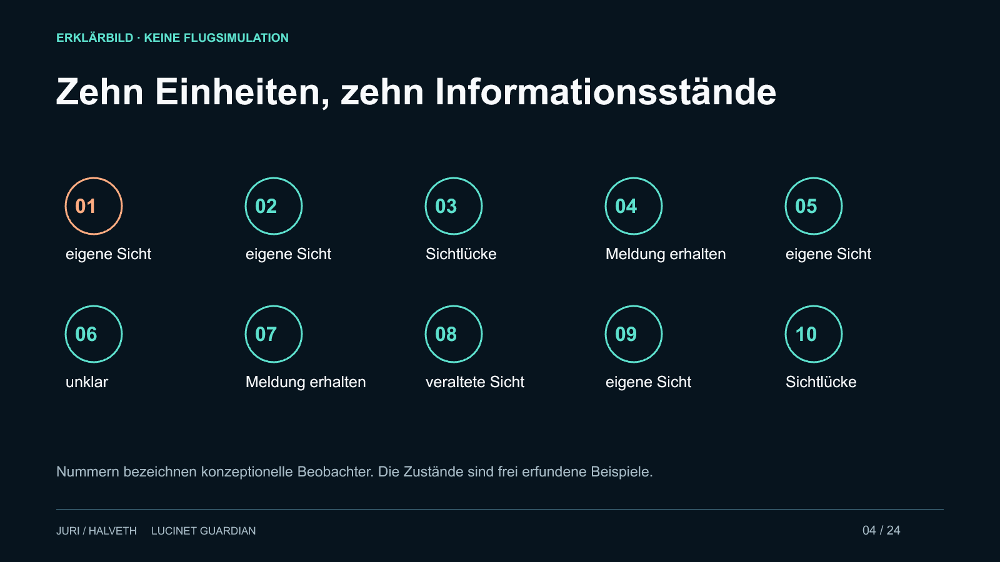
Folientext lesen
ERKLÄRBILD · KEINE FLUGSIMULATION
Zehn Einheiten, zehn Informationsstände
JURI / HALVETH LUCINET GUARDIAN
04 / 24
01
eigene Sicht
02
eigene Sicht
03
Sichtlücke
04
Meldung erhalten
05
eigene Sicht
06
unklar
07
Meldung erhalten
08
veraltete Sicht
09
eigene Sicht
10
Sichtlücke
Nummern bezeichnen konzeptionelle Beobachter. Die Zustände sind frei erfundene Beispiele.
05. Eine Meldung kann oft auftauchen
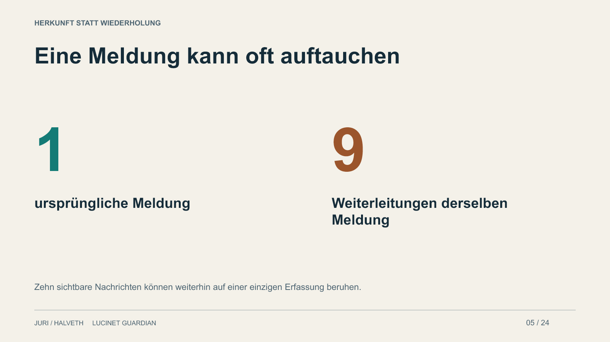
Folientext lesen
HERKUNFT STATT WIEDERHOLUNG
Eine Meldung kann oft auftauchen
JURI / HALVETH LUCINET GUARDIAN
05 / 24
1
ursprüngliche Meldung
9
Weiterleitungen derselben Meldung
Zehn sichtbare Nachrichten können weiterhin auf einer einzigen Erfassung beruhen.
06. Eine Handlung bestätigt keine Einschätzung
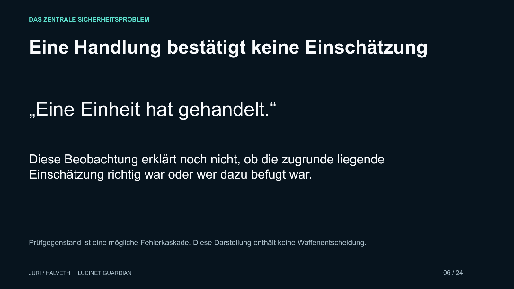
Folientext lesen
DAS ZENTRALE SICHERHEITSPROBLEM
Eine Handlung bestätigt keine Einschätzung
JURI / HALVETH LUCINET GUARDIAN
06 / 24
„Eine Einheit hat gehandelt.“
Diese Beobachtung erklärt noch nicht, ob die zugrunde liegende Einschätzung richtig war oder wer dazu befugt war.
Prüfgegenstand ist eine mögliche Fehlerkaskade. Diese Darstellung enthält keine Waffenentscheidung.
07. Ein Widerspruch bleibt sichtbar
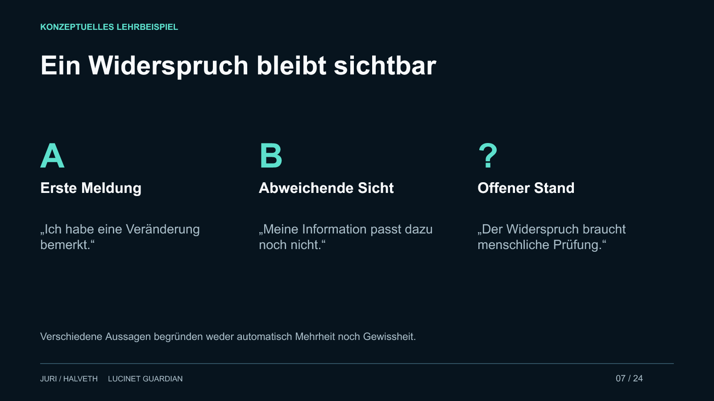
Folientext lesen
KONZEPTUELLES LEHRBEISPIEL
Ein Widerspruch bleibt sichtbar
JURI / HALVETH LUCINET GUARDIAN
07 / 24
A
Erste Meldung
„Ich habe eine Veränderung bemerkt.“
B
Abweichende Sicht
„Meine Information passt dazu noch nicht.“
?
Offener Stand
„Der Widerspruch braucht menschliche Prüfung.“
Verschiedene Aussagen begründen weder automatisch Mehrheit noch Gewissheit.
08. Individuelle Prüfung hat zwei Seiten
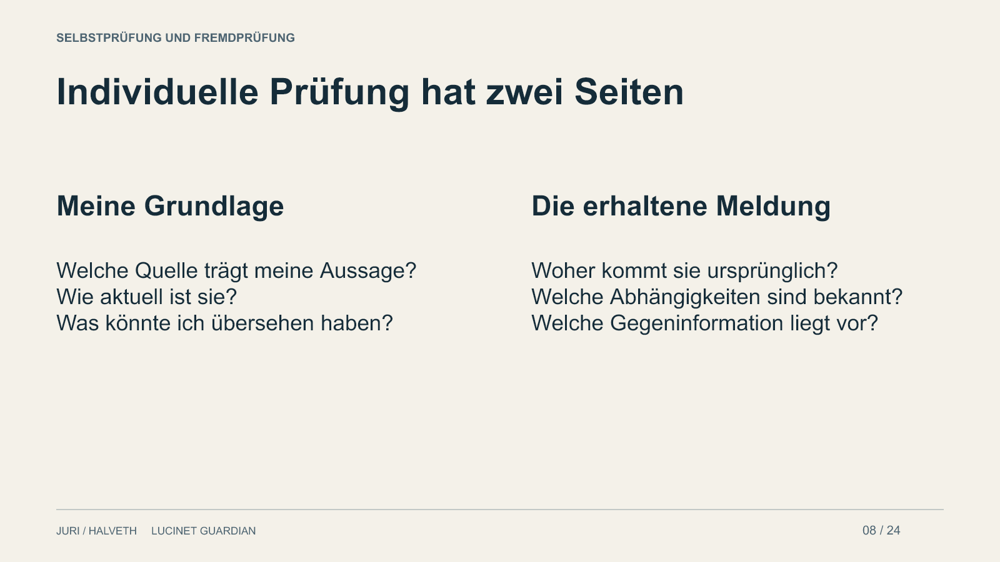
Folientext lesen
SELBSTPRÜFUNG UND FREMDPRÜFUNG
Individuelle Prüfung hat zwei Seiten
JURI / HALVETH LUCINET GUARDIAN
08 / 24
Meine Grundlage
Welche Quelle trägt meine Aussage?
Wie aktuell ist sie?
Was könnte ich übersehen haben?
Die erhaltene Meldung
Woher kommt sie ursprünglich?
Welche Abhängigkeiten sind bekannt?
Welche Gegeninformation liegt vor?
09. Zeit gehört zu jeder Beobachtung
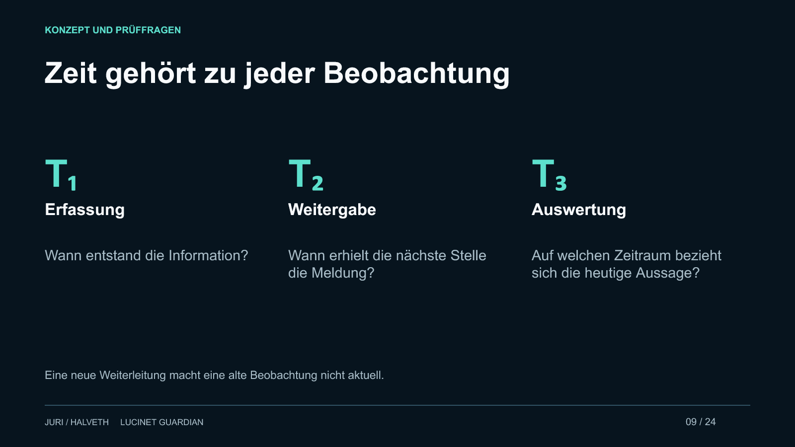
Folientext lesen
KONZEPT UND PRÜFFRAGEN
Zeit gehört zu jeder Beobachtung
JURI / HALVETH LUCINET GUARDIAN
09 / 24
T₁
Erfassung
Wann entstand die Information?
T₂
Weitergabe
Wann erhielt die nächste Stelle die Meldung?
T₃
Auswertung
Auf welchen Zeitraum bezieht sich die heutige Aussage?
Eine neue Weiterleitung macht eine alte Beobachtung nicht aktuell.
10. Sichtbares Bild und Infrarot
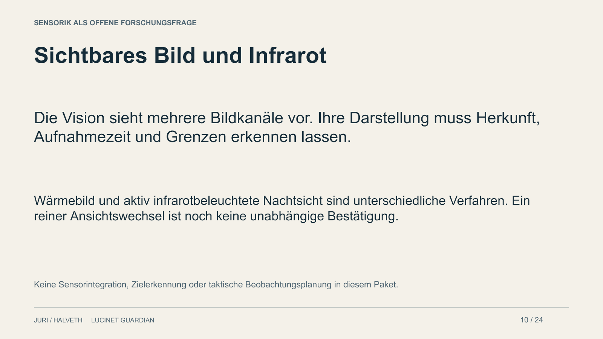
Folientext lesen
SENSORIK ALS OFFENE FORSCHUNGSFRAGE
Sichtbares Bild und Infrarot
JURI / HALVETH LUCINET GUARDIAN
10 / 24
Die Vision sieht mehrere Bildkanäle vor. Ihre Darstellung muss Herkunft, Aufnahmezeit und Grenzen erkennen lassen.
Wärmebild und aktiv infrarotbeleuchtete Nachtsicht sind unterschiedliche Verfahren. Ein reiner Ansichtswechsel ist noch keine unabhängige Bestätigung.
Keine Sensorintegration, Zielerkennung oder taktische Beobachtungsplanung in diesem Paket.
11. Eine Sichtlücke ist ein eigener Zustand
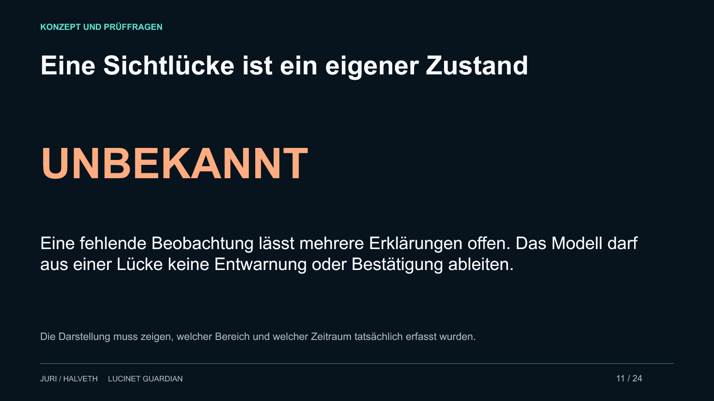
Folientext lesen
KONZEPT UND PRÜFFRAGEN
Eine Sichtlücke ist ein eigener Zustand
JURI / HALVETH LUCINET GUARDIAN
11 / 24
UNBEKANNT
Eine fehlende Beobachtung lässt mehrere Erklärungen offen. Das Modell darf aus einer Lücke keine Entwarnung oder Bestätigung ableiten.
Die Darstellung muss zeigen, welcher Bereich und welcher Zeitraum tatsächlich erfasst wurden.
12. Menschliche Verantwortung bleibt benennbar
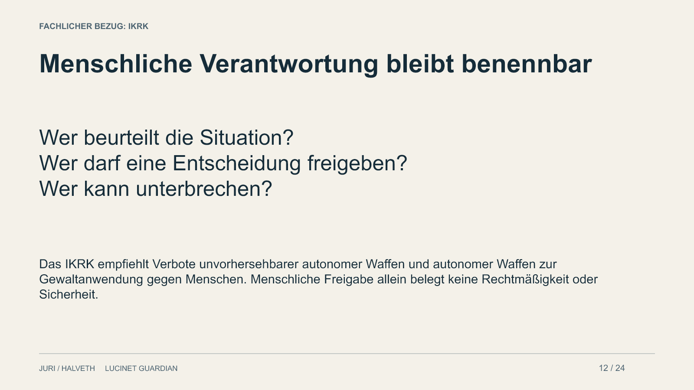
Folientext lesen
FACHLICHER BEZUG: IKRK
Menschliche Verantwortung bleibt benennbar
JURI / HALVETH LUCINET GUARDIAN
12 / 24
Wer beurteilt die Situation?
Wer darf eine Entscheidung freigeben?
Wer kann unterbrechen?
Das IKRK empfiehlt Verbote unvorhersehbarer autonomer Waffen und autonomer Waffen zur Gewaltanwendung gegen Menschen. Menschliche Freigabe allein belegt keine Rechtmäßigkeit oder Sicherheit.
13. Lernen braucht einen prüfbaren Änderungsstand
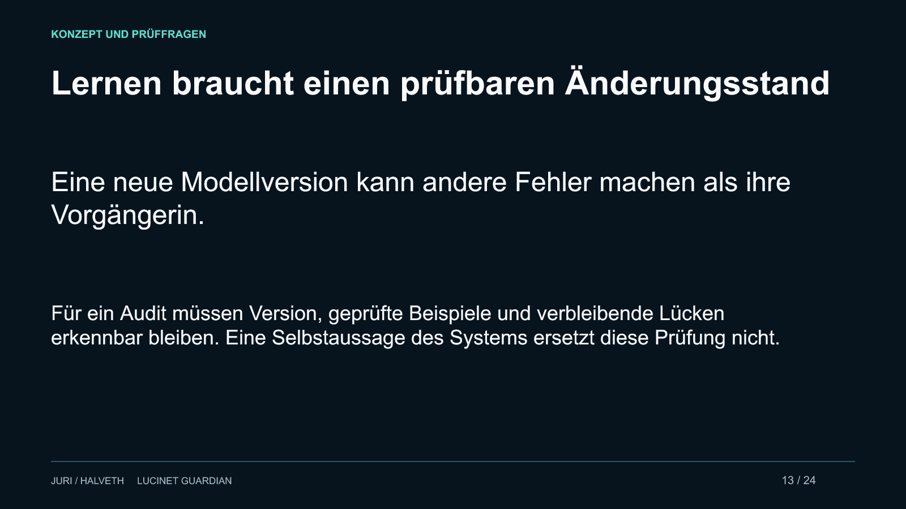
Folientext lesen
KONZEPT UND PRÜFFRAGEN
Lernen braucht einen prüfbaren Änderungsstand
JURI / HALVETH LUCINET GUARDIAN
13 / 24
Eine neue Modellversion kann andere Fehler machen als ihre Vorgängerin.
Für ein Audit müssen Version, geprüfte Beispiele und verbleibende Lücken erkennbar bleiben. Eine Selbstaussage des Systems ersetzt diese Prüfung nicht.
14. Kinder als besonders schutzbedürftige Betroffene
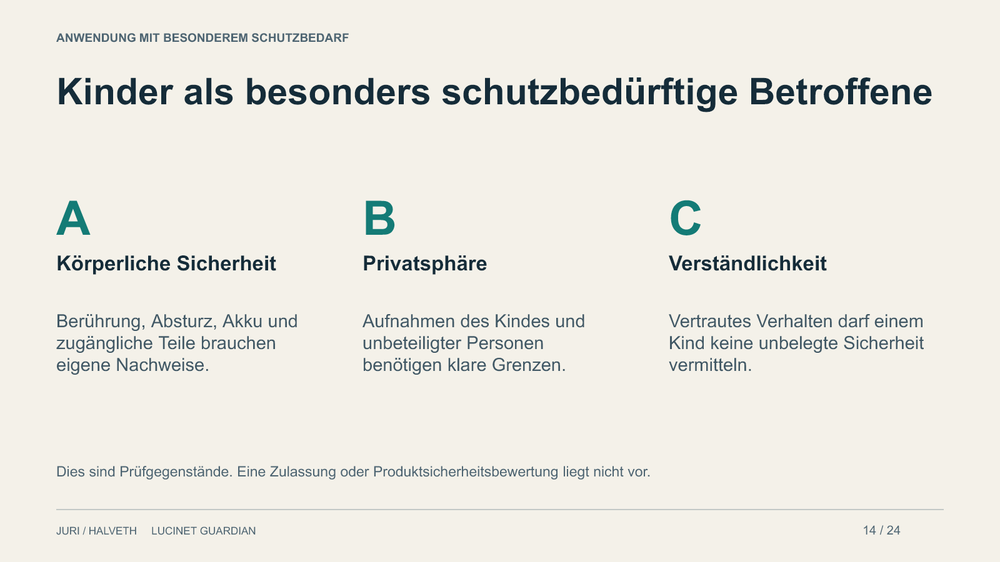
Folientext lesen
ANWENDUNG MIT BESONDEREM SCHUTZBEDARF
Kinder als besonders schutzbedürftige Betroffene
JURI / HALVETH LUCINET GUARDIAN
14 / 24
A
Körperliche Sicherheit
Berührung, Absturz, Akku und zugängliche Teile brauchen eigene Nachweise.
B
Privatsphäre
Aufnahmen des Kindes und unbeteiligter Personen benötigen klare Grenzen.
C
Verständlichkeit
Vertrautes Verhalten darf einem Kind keine unbelegte Sicherheit vermitteln.
Dies sind Prüfgegenstände. Eine Zulassung oder Produktsicherheitsbewertung liegt nicht vor.
15. Beobachtung braucht begrenzte Daten
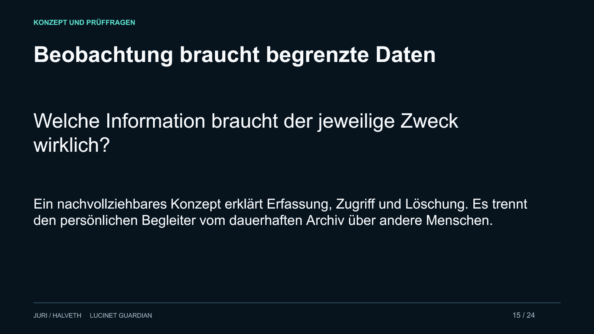
Folientext lesen
KONZEPT UND PRÜFFRAGEN
Beobachtung braucht begrenzte Daten
JURI / HALVETH LUCINET GUARDIAN
15 / 24
Welche Information braucht der jeweilige Zweck wirklich?
Ein nachvollziehbares Konzept erklärt Erfassung, Zugriff und Löschung. Es trennt den persönlichen Begleiter vom dauerhaften Archiv über andere Menschen.
16. Gemeinsame Quellen verbinden Fehler
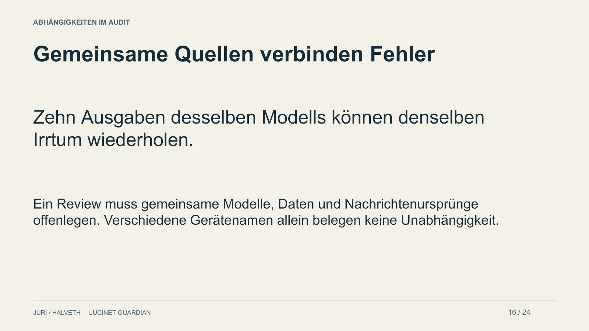
Folientext lesen
ABHÄNGIGKEITEN IM AUDIT
Gemeinsame Quellen verbinden Fehler
JURI / HALVETH LUCINET GUARDIAN
16 / 24
Zehn Ausgaben desselben Modells können denselben Irrtum wiederholen.
Ein Review muss gemeinsame Modelle, Daten und Nachrichtenursprünge offenlegen. Verschiedene Gerätenamen allein belegen keine Unabhängigkeit.
17. Der vorhandene grafische Pilot
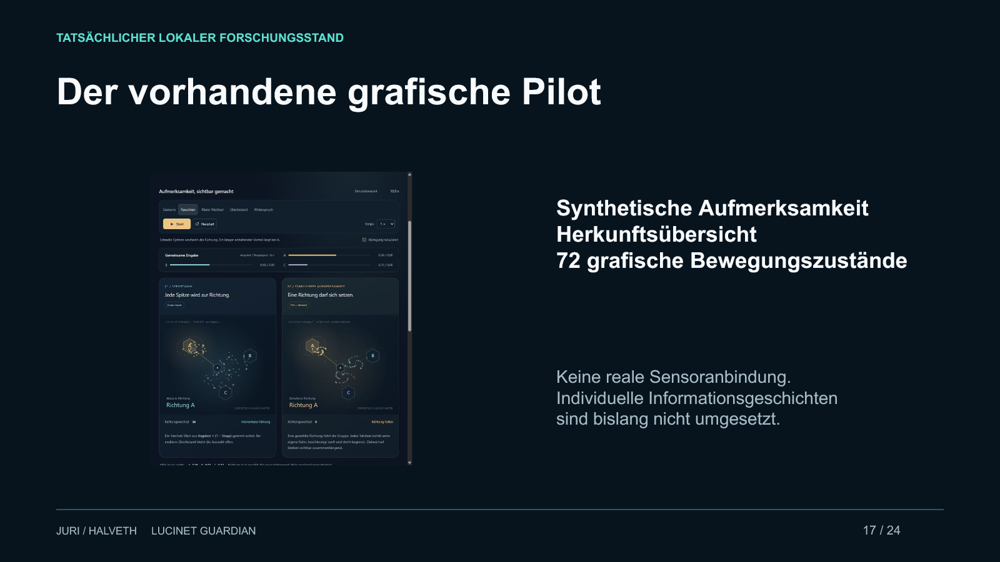
Folientext lesen
TATSÄCHLICHER LOKALER FORSCHUNGSSTAND
Der vorhandene grafische Pilot
JURI / HALVETH LUCINET GUARDIAN
17 / 24
Synthetische Aufmerksamkeit
Herkunftsübersicht
72 grafische Bewegungszustände
Keine reale Sensoranbindung.
Individuelle Informationsgeschichten
sind bislang nicht umgesetzt.
18. Ruhigerer Fokus im synthetischen Vergleich
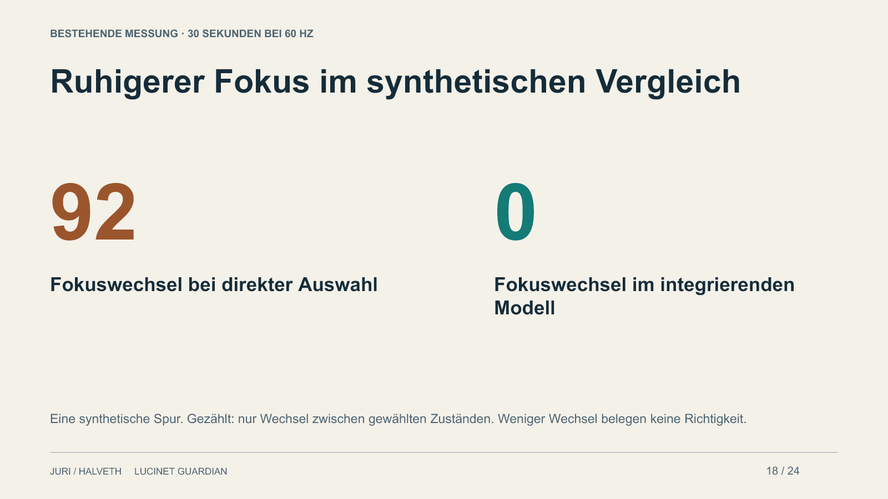
Folientext lesen
BESTEHENDE MESSUNG · 30 SEKUNDEN BEI 60 HZ
Ruhigerer Fokus im synthetischen Vergleich
JURI / HALVETH LUCINET GUARDIAN
18 / 24
92
Fokuswechsel bei direkter Auswahl
0
Fokuswechsel im integrierenden Modell
Eine synthetische Spur. Gezählt: nur Wechsel zwischen gewählten Zuständen. Weniger Wechsel belegen keine Richtigkeit.
19. Der Gegenvergleich begrenzt die Aussage
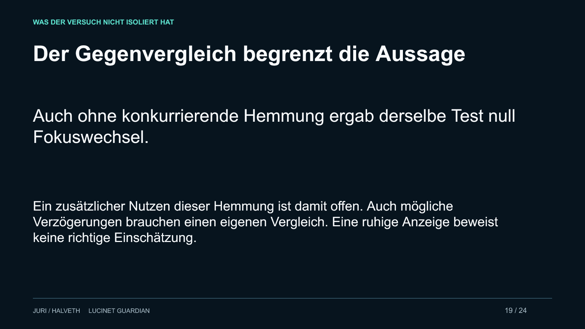
Folientext lesen
WAS DER VERSUCH NICHT ISOLIERT HAT
Der Gegenvergleich begrenzt die Aussage
JURI / HALVETH LUCINET GUARDIAN
19 / 24
Auch ohne konkurrierende Hemmung ergab derselbe Test null Fokuswechsel.
Ein zusätzlicher Nutzen dieser Hemmung ist damit offen. Auch mögliche Verzögerungen brauchen einen eigenen Vergleich. Eine ruhige Anzeige beweist keine richtige Einschätzung.
20. Softwaretests prüfen festgelegte Eigenschaften
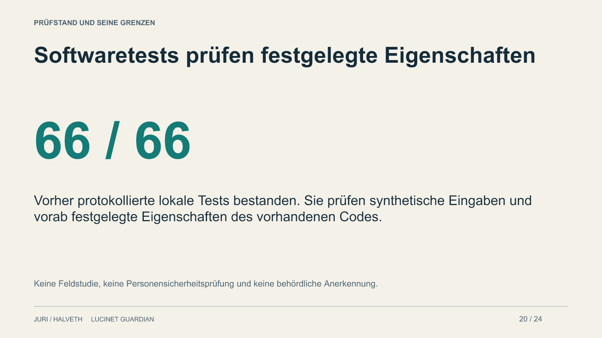
Folientext lesen
PRÜFSTAND UND SEINE GRENZEN
Softwaretests prüfen festgelegte Eigenschaften
JURI / HALVETH LUCINET GUARDIAN
20 / 24
66 / 66
Vorher protokollierte lokale Tests bestanden. Sie prüfen synthetische Eingaben und vorab festgelegte Eigenschaften des vorhandenen Codes.
Keine Feldstudie, keine Personensicherheitsprüfung und keine behördliche Anerkennung.
21. Ein fachliches Review braucht Gegenbeispiele
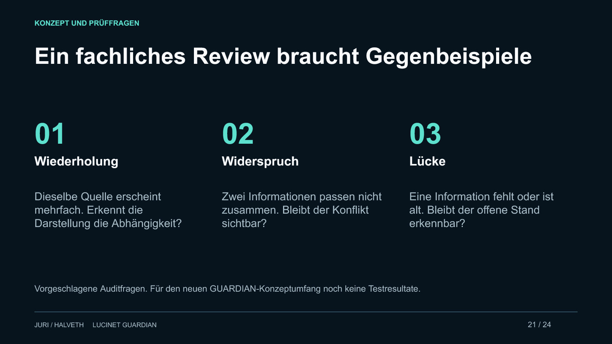
Folientext lesen
KONZEPT UND PRÜFFRAGEN
Ein fachliches Review braucht Gegenbeispiele
JURI / HALVETH LUCINET GUARDIAN
21 / 24
01
Wiederholung
Dieselbe Quelle erscheint mehrfach. Erkennt die Darstellung die Abhängigkeit?
02
Widerspruch
Zwei Informationen passen nicht zusammen. Bleibt der Konflikt sichtbar?
03
Lücke
Eine Information fehlt oder ist alt. Bleibt der offene Stand erkennbar?
Vorgeschlagene Auditfragen. Für den neuen GUARDIAN-Konzeptumfang noch keine Testresultate.
22. Einordnung in bestehende Forschung
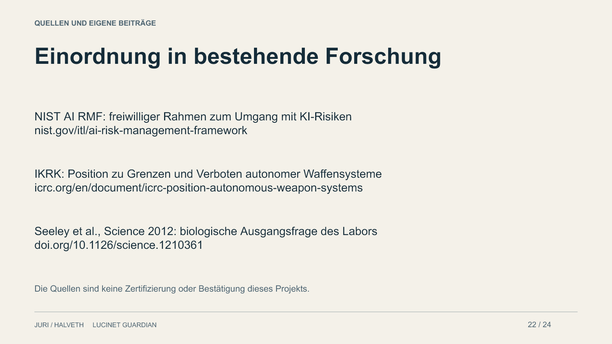
Folientext lesen
QUELLEN UND EIGENE BEITRÄGE
Einordnung in bestehende Forschung
JURI / HALVETH LUCINET GUARDIAN
22 / 24
NIST AI RMF: freiwilliger Rahmen zum Umgang mit KI-Risiken
nist.gov/itl/ai-risk-management-framework
IKRK: Position zu Grenzen und Verboten autonomer Waffensysteme
icrc.org/en/document/icrc-position-autonomous-weapon-systems
Seeley et al., Science 2012: biologische Ausgangsfrage des Labors
doi.org/10.1126/science.1210361
Die Quellen sind keine Zertifizierung oder Bestätigung dieses Projekts.
23. Öffentliche Nachvollziehbarkeit
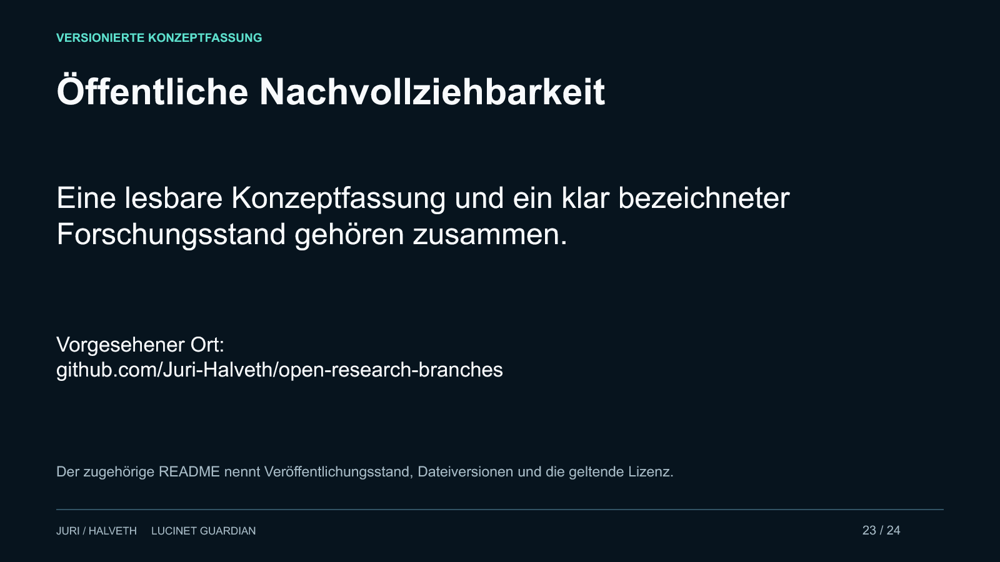
Folientext lesen
VERSIONIERTE KONZEPTFASSUNG
Öffentliche Nachvollziehbarkeit
JURI / HALVETH LUCINET GUARDIAN
23 / 24
Eine lesbare Konzeptfassung und ein klar bezeichneter Forschungsstand gehören zusammen.
Vorgesehener Ort:
github.com/Juri-Halveth/open-research-branches
Der zugehörige README nennt Veröffentlichungsstand, Dateiversionen und die geltende Lizenz.
24. Einladung zur unabhängigen Bewertung
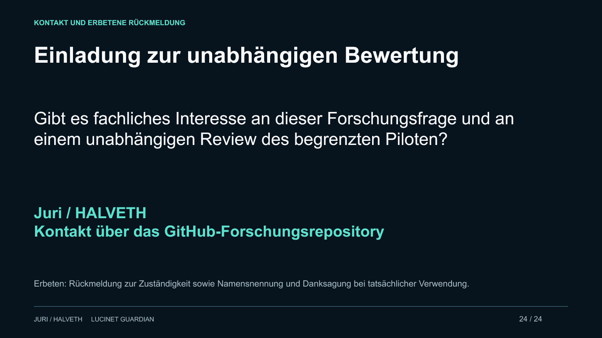
Folientext lesen
KONTAKT UND ERBETENE RÜCKMELDUNG
Einladung zur unabhängigen Bewertung
JURI / HALVETH LUCINET GUARDIAN
24 / 24
Gibt es fachliches Interesse an dieser Forschungsfrage und an einem unabhängigen Review des begrenzten Piloten?
Juri / HALVETH
Kontakt über das GitHub-Forschungsrepository
Erbeten: Rückmeldung zur Zuständigkeit sowie Namensnennung und Danksagung bei tatsächlicher Verwendung.